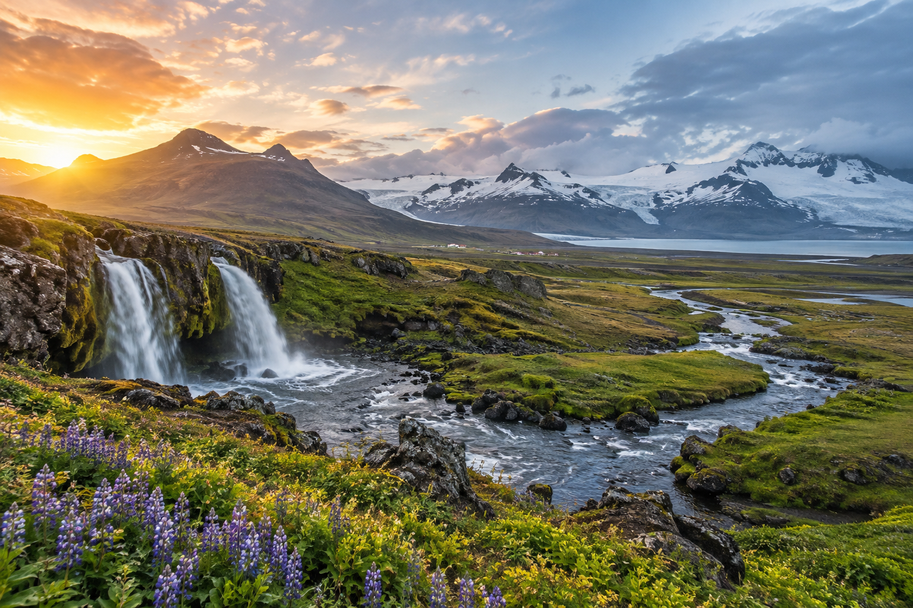
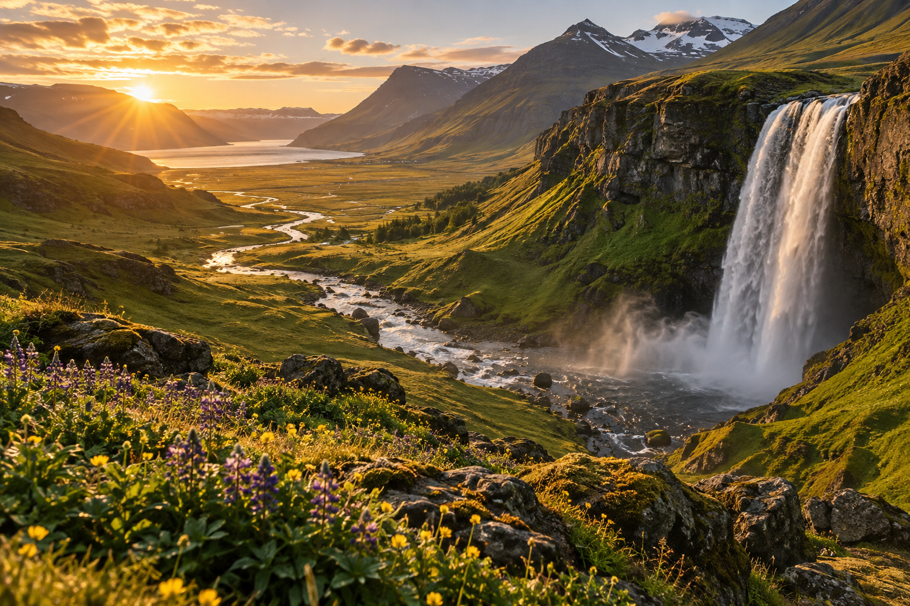
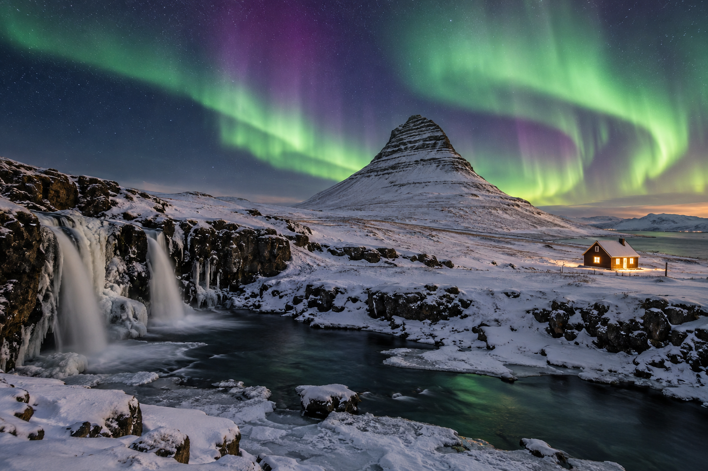

Best Time to Visit Iceland: Weather, Crowds and Costs
The best time to visit Iceland depends on what you want from the trip. June through August is usually the easiest period for a first self-drive trip because daylight is extremely long and the main road-trip routes are easier to use. If seeing the Northern Lights is a priority, you need darker nights, which means traveling from roughly late August through late April.
There is a trade-off. Summer gives you the greatest road-trip freedom, but it also brings the strongest visitor demand and higher pressure on rental cars and accommodation. Winter can offer lower demand, snowy scenery, and aurora opportunities, but daylight is limited and weather can disrupt driving. Spring and autumn sit between those extremes and can offer a useful balance for flexible travelers.
This guide compares Iceland month by month, including weather, daylight, crowds, costs, road conditions, Northern Lights potential, and which season works best for different types of first-time trips. If you have not decided how long to stay yet, read How Many Days Do You Need in Iceland? before choosing your travel month.
Iceland Seasons at a Glance

| Period | Best For | Crowds | Cost Pressure | Daylight | Northern Lights |
|---|---|---|---|---|---|
| December–February | Winter scenery, aurora, geothermal bathing | Low to moderate | Lower to moderate, except holidays | Very short | Excellent potential |
| March–April | Aurora + increasing daylight | Low to moderate | Moderate | Rapidly increasing | Good potential |
| May | Long days, fewer peak crowds | Moderate | Moderate | Very long | Poor |
| June | Midnight Sun, road trips, hiking | High | High | Extremely long | No useful darkness |
| July | Ring Road, hiking, Highlands | Very high | Very high | Very long | No useful darkness |
| August | Road trips + darker nights returning late month | Very high early, easing later | High | Long | Possible late month |
| September | Autumn, road trips, aurora | Moderate | Moderate to high | Balanced | Good |
| October | Northern Lights, lower crowds | Lower | Moderate | Shortening quickly | Very good |
| November | Winter atmosphere, aurora | Low | Lower to moderate | Short | Very good |
These are planning patterns, not guarantees. Weather and accommodation demand can change from year to year.
What Is the Best Month to Visit Iceland?
For a first-time visitor who wants the easiest overall trip:
June, July, or August is the simplest choice.
For a better balance of:
- ✓Reasonable daylight
- ✓Fewer peak-summer visitors
- ✓Road-trip possibilities
- ✓Northern Lights potential
I would look closely at:
September.
For a winter trip centered on:
- ✓Northern Lights
- ✓Snow
- ✓Geothermal bathing
- ✓Reykjavík
- ✓Guided excursions
consider:
February or March.
There is no month that offers:
- ✓Midnight Sun
- ✓Warmest weather
- ✓Empty attractions
- ✓Lowest prices
- ✓Northern Lights
- ✓Easiest roads
all at once.
You have to decide which conditions matter most.
Understanding Iceland's Weather
Iceland is located close to the Arctic Circle, but its coastal climate is milder than many travelers expect.
The Icelandic Meteorological Office explains that ocean currents help moderate temperatures.
The trade-off is highly changeable weather.
You may experience:
- ✓Sun
- ✓Rain
- ✓Wind
- ✓Cloud
- ✓Cold
during the same day.
That is normal.
Weather Varies Across Iceland
Conditions are not identical across the country.
In broad terms:
- ✓South and west tend to receive more precipitation
- ✓North Iceland can be drier
- ✓Highlands are colder
- ✓Coastal conditions differ from inland areas
Do not look at Reykjavík's forecast and assume it represents:
- ✓Vík
- ✓Jökulsárlón
- ✓Mývatn
- ✓Akureyri
on the same day.
Is Iceland Warm in Summer?
Not in the way many travelers use the word:
warm.
Icelandic summer weather is generally cool.
Even during the longest days, you should expect:
- ✓Wind
- ✓Cloud
- ✓Rain
- ✓Cool evenings
Sunny conditions do occur, and individual days can feel pleasantly mild.
But do not pack for Iceland as if you were visiting southern Europe.
Summer's Real Advantage Is Daylight
The biggest benefit is not high temperature.
It is:
time.
During early summer, daylight stretches through almost the entire night.
That gives road trippers much more flexibility.
You can:
- ✓Start later
- ✓Stay longer at attractions
- ✓Reach hotels without darkness
- ✓Adjust after delays
That is one reason summer is so useful for first-time visitors.
What Is the Midnight Sun?
Around the longest days of the year, Iceland has extremely long daylight.
The sun may dip close to the horizon rather than producing a normal dark night.
This creates the famous:
Midnight Sun
experience.
It is strongest around:
June.
The effect continues across much of the summer, although darkness gradually returns later.
Is Midnight Sun Good for Road Trips?
Yes.
It is especially useful for:
- ✓Ring Road trips
- ✓Photography
- ✓Long sightseeing days
- ✓Hiking
- ✓Remote travel
But do not use daylight as an excuse to keep driving until midnight every night.
You still need:
- ✓Rest
- ✓Sleep
- ✓Safe concentration
Long daylight should make the trip easier, not more exhausting.
When Can You See the Northern Lights?
Visit Iceland currently describes Iceland's main aurora season as roughly:
late August through late April.
You need:
- ✓Darkness
- ✓Sufficiently clear skies
- ✓Aurora activity
That means summer is not the right choice if the Northern Lights are one of your main goals.
Can You See Northern Lights Every Winter Night?
No.
Even in the correct season:
- ✓Clouds can block the sky
- ✓Aurora activity varies
- ✓Weather may be poor
A longer trip gives you more chances.
Do not choose one specific night and assume the aurora will appear on schedule.
Which Is Better: Summer or Winter?
They are almost two different versions of Iceland.
Choose Summer If You Want:
- ✓Road trips
- ✓Ring Road
- ✓Long daylight
- ✓Hiking
- ✓Easier access to remote regions
- ✓More predictable route planning
Choose Winter If You Want:
- ✓Northern Lights
- ✓Snowy landscapes
- ✓Winter atmosphere
- ✓Shorter regional trips
- ✓Geothermal bathing in cold weather
For a first Iceland trip, summer is generally easier.
Winter can be more atmospheric, but it requires more flexibility.
Summer Crowds in Iceland
Summer is Iceland's main visitor season.
Official tourism data shows visitor numbers rise sharply in:
- ✓June
- ✓July
- ✓August
with July and August especially busy.
This is not surprising.
Summer combines:
- ✓School holidays
- ✓Long daylight
- ✓Better road access
- ✓Hiking season
- ✓Ring Road demand
What Does “Crowded” Mean in Iceland?
You are unlikely to experience the same density as a major city throughout the whole country.
Crowding tends to concentrate around famous attractions such as:
- ✓Golden Circle
- ✓Seljalandsfoss
- ✓Skógafoss
- ✓Reynisfjara
- ✓Jökulsárlón
- ✓Central Reykjavík
Remote regions can still feel relatively quiet.
How to Reduce Summer Crowds
You can improve the experience by:
- ✓Starting earlier
- ✓Visiting famous places later in the day
- ✓Staying near attractions
- ✓Spending more time outside Reykjavík day-trip zones
- ✓Choosing less-famous stops between major sights
Long summer daylight makes this easier.
Summer Accommodation Demand
Accommodation demand rises significantly during summer.
This matters most in smaller road-trip towns.
A sold-out night around:
- ✓Vík
- ✓Southeast Iceland
- ✓Mývatn
- ✓East Iceland
can force you to change the route.
This is why summer Ring Road trips should usually be booked earlier than winter Reykjavík trips.
July and August Require More Planning
Recent official accommodation data shows some Iceland regions reaching very high hotel occupancy during July and August.
That does not mean every hotel is full.
It means waiting too long reduces your choice.
The most affected bookings can include:
- ✓Rural guesthouses
- ✓Family rooms
- ✓Well-located hotels
- ✓Budget accommodation
- ✓Automatic rental cars
Are Summer Prices Higher?
Often, yes.
Strong demand can push up the cost of:
- ✓Hotels
- ✓Rental cars
- ✓Campervans
- ✓Some activities
This is particularly relevant during peak summer.
But do not assume winter is always cheap.
Prices can rise around:
- ✓Christmas
- ✓New Year
- ✓Special events
- ✓High-demand aurora periods
Iceland is not a low-cost destination simply because you visit outside July.
The dedicated Iceland Trip Cost: Budget for 3, 5, 7 and 10 Days article will cover actual budgeting separately.
Are Spring and Autumn Cheaper?
They can offer better value than peak summer.
Months such as:
- ✓May
- ✓September
- ✓October
may provide a better balance between:
- ✓Accommodation choice
- ✓Road access
- ✓Visitor levels
- ✓Daylight
However, demand is not identical every year.
Always compare your exact dates.
January in Iceland
January is one of Iceland's darkest months.
It is a strong choice for travelers interested in:
- ✓Northern Lights
- ✓Winter landscapes
- ✓Geothermal pools
- ✓Reykjavík
- ✓Guided winter tours
It is not the month I would choose for a first full Ring Road trip.
January Weather
Expect winter conditions.
Possible challenges include:
- ✓Snow
- ✓Ice
- ✓Wind
- ✓Storms
- ✓Changing road conditions
The Icelandic climate is relatively mild for its latitude, but that does not make winter driving easy.
January Daylight
Days are short.
This affects how much sightseeing you can fit between:
- ✓Sunrise
- ✓Sunset
You need to plan fewer outdoor stops than you would in June.
January Crowds
Generally lower than midsummer.
You may find famous outdoor attractions less crowded, although:
- ✓Reykjavík
- ✓Northern Lights tours
- ✓Major winter experiences
can still be busy.
January Costs
Accommodation and car demand can be lower than midsummer after the New Year period.
But price should not be your main reason for choosing January.
Choose it because you actually want a winter Iceland experience.
January Is Best For:
- ✓Aurora trips
- ✓Reykjavík breaks
- ✓Geothermal bathing
- ✓Guided Golden Circle/South Coast trips
- ✓Travelers comfortable with winter conditions
January Is Weak For:
- ✓First-time Ring Road
- ✓Highlands
- ✓Long hiking days
- ✓Maximum road-trip flexibility
February in Iceland
February remains a true winter month, but daylight is increasing.
For many visitors, that makes February more attractive than January.
You still get:
- ✓Dark nights
- ✓Northern Lights potential
- ✓Snow
- ✓Winter scenery
while gaining more useful daylight.
February Weather
Winter weather can include:
- ✓Snow
- ✓Ice
- ✓Strong wind
- ✓Rapid changes
A clear morning does not guarantee an easy afternoon.
February Crowds
Usually lower than summer.
You may see stronger demand around:
- ✓School breaks
- ✓Valentine's travel
- ✓Popular winter experiences
but the country overall remains far less dominated by peak-season road-trip traffic than July.
February Costs
Can be more manageable than summer for some hotel categories and car rentals.
Always compare actual dates rather than assuming every February booking is inexpensive.
February Is Best For:
- ✓Northern Lights
- ✓Winter photography
- ✓Reykjavík
- ✓South Iceland with flexibility
- ✓Travelers wanting more daylight than January
March in Iceland
March is one of the most interesting months for travelers who want:
winter atmosphere + much better daylight.
Northern Lights season continues, while days grow rapidly.
This makes March a strong candidate for a first winter trip.
March Weather
Do not mistake more daylight for spring road conditions.
March can still bring:
- ✓Snow
- ✓Ice
- ✓Winter storms
- ✓Strong wind
SafeTravel warns that winter road conditions are possible outside the narrow calendar definition of winter.
Why March Can Work Well
Compared with the darkest months, you gain:
- ✓More sightseeing hours
- ✓Easier daytime photography
- ✓More flexible tour schedules
while still having dark nights.
March Crowds
Usually below summer levels.
The most popular southern attractions can still be busy, especially around midday.
March Is Best For:
- ✓Northern Lights
- ✓Winter landscapes
- ✓Increasing daylight
- ✓Reykjavík + South Coast
- ✓First-time winter visitors
April in Iceland
April is a transition month.
Winter does not disappear on April 1.
Conditions can vary considerably between:
- ✓Regions
- ✓Elevations
- ✓Individual weeks
You may experience signs of spring while still encountering:
- ✓Snow
- ✓Ice
- ✓Strong wind
Northern Lights in April
Aurora can still be possible during the earlier part of the month while nights remain dark enough.
As daylight increases, the useful viewing window shrinks.
By late spring, darkness becomes the limiting factor.
April Daylight
Daylight increases quickly.
This gives you more room for:
- ✓Golden Circle
- ✓South Coast
- ✓Reykjavík
- ✓Road trips
than during midwinter.
April Crowds
Generally lower than summer.
Easter dates can affect:
- ✓Demand
- ✓Flights
- ✓Accommodation
depending on the year.
April Costs
Can offer better value than peak summer, but conditions are less predictable.
April Is Best For:
- ✓Travelers wanting longer days without summer crowds
- ✓Flexible road trips
- ✓Late-season aurora opportunities
- ✓South and southwest Iceland
April Is Weak For:
- ✓Travelers who expect full summer road access
- ✓Travelers who dislike weather uncertainty
May in Iceland
May is one of the most appealing shoulder-season months.
Daylight becomes very long.
The landscapes are moving toward summer, and visitor numbers have not always reached their July-August peak.
For some first-time visitors, May offers an excellent balance.
May Weather
May is not summer in the warm-climate sense.
You should still expect:
- ✓Cool weather
- ✓Wind
- ✓Rain
- ✓Sudden changes
Winter-like conditions can still occur in some places.
May Daylight
This is one of May's strongest advantages.
Long days make it easier to:
- ✓Self-drive
- ✓Explore the South Coast
- ✓Photograph landscapes
- ✓Keep a flexible schedule
May Crowds
Generally more manageable than July and August.
Major sights are not empty, but you may face less pressure than in peak summer.
May Costs
Potentially better than peak summer for some:
- ✓Accommodation
- ✓Rentals
but this varies by date and demand.
What May Does Not Give You
Do not choose May if the Northern Lights are essential.
The nights are becoming too bright for reliable aurora viewing.
May Is Best For:
- ✓Long daylight
- ✓Fewer peak-summer crowds
- ✓South Coast trips
- ✓Road trips
- ✓First-time visitors comfortable with cool weather
Is May Good for the Ring Road?
It can be.
But you need to check:
- ✓Current road conditions
- ✓Weather
- ✓Seasonal access
Do not assume every remote summer route is automatically ready.
For the standard Ring Road, May can work well when conditions cooperate.
June in Iceland

June is one of the best months for a classic first Iceland road trip.
Its defining feature is:
daylight.
Around the summer solstice, nights remain extremely bright.
This makes June especially strong for:
- ✓Ring Road
- ✓South Coast
- ✓Photography
- ✓Hiking
- ✓Long-distance self-driving
June Weather
Iceland remains cool even in summer.
The Meteorological Office describes summer as often:
- ✓Cloudy
- ✓Cool
- ✓Changeable
So bring expectations of a northern outdoor trip, not warm-weather tourism.
June Daylight
June gives you some of the longest daylight of the year.
This is valuable because it allows more flexibility when:
- ✓A stop takes longer
- ✓Lunch is delayed
- ✓You want to photograph a waterfall later
- ✓You reach a town later than expected
June Crowds
Crowds rise considerably.
Summer tourism is fully underway.
However, June can sometimes feel slightly less pressured than the busiest part of July and August, depending on exact dates and location.
June Costs
Expect summer demand.
Book:
- ✓Rental car
- ✓Rural accommodation
earlier if your route is fixed.
Northern Lights in June
No.
The sky does not get dark enough for normal aurora viewing.
If Northern Lights are a main goal, choose another season.
June and the Highlands
June is when some travelers begin thinking about Iceland's Highlands.
But Highland and F-road openings are condition-dependent.
They do not open on the same guaranteed calendar date every year.
Do not plan a June Highland route around:
“the road should be open by then.”
Check the actual road status.
June Is Best For:
- ✓Midnight Sun
- ✓Road trips
- ✓Ring Road
- ✓Hiking
- ✓Photography
- ✓Long sightseeing days
June Is Weak For:
- ✓Northern Lights
- ✓Low-season prices
- ✓Travelers trying to avoid summer demand
January to June Comparison
| Month | Weather Style | Daylight | Crowds | Cost Pressure | Aurora |
|---|---|---|---|---|---|
| January | Deep winter | Very short | Low | Low–moderate | Excellent |
| February | Winter | Increasing | Low–moderate | Moderate | Excellent |
| March | Winter / transition | Much longer | Moderate | Moderate | Very good |
| April | Transitional | Long | Moderate | Moderate | Possible earlier |
| May | Cool spring | Very long | Moderate | Moderate | Poor |
| June | Cool summer | Near-maximum | High | High | No |
Which of These Months Would I Choose?
Choose January If:
Your priority is:
winter + Northern Lights
and you accept short days.
Choose February If:
You want:
Northern Lights + slightly better daylight.
Choose March If:
You want one of the strongest balances for a winter-style trip:
dark nights + useful daylight.
Choose April If:
You value:
increasing daylight + lower crowds
and can accept unpredictable conditions.
Choose May If:
You want:
long days + shoulder-season travel
without needing aurora.
Choose June If:
You want:
the easiest start to a summer road-trip season and Midnight Sun conditions.
The Key Rule for Choosing an Iceland Month
Choose the month based on the experience you want most.
Do not start with:
“Which month has the best weather?”
Iceland's weather is too changeable for that to be the only decision.
Instead ask:
- ✓Do I want Northern Lights?
- ✓Do I want Ring Road?
- ✓Do I want hiking?
- ✓Do I want Midnight Sun?
- ✓How much do crowds matter?
- ✓How much driving flexibility do I need?
- ✓Am I comfortable with winter roads?
Those answers narrow the season much faster than searching for a single perfect month.
July in Iceland
July is one of the easiest months for a first-time Iceland road trip.
It offers:
- ✓Very long daylight
- ✓Strong road-trip conditions
- ✓Hiking opportunities
- ✓Better access to rural areas
- ✓Peak wildlife activity
- ✓The broadest range of summer experiences
It is also one of the busiest and most expensive months.
If your goal is:
Ring Road + long sightseeing days + hiking
July is one of the strongest choices.
July Weather
July is usually one of Iceland's mildest months, but the weather still feels cool.
You should remain prepared for:
- ✓Wind
- ✓Rain
- ✓Cloud
- ✓Cool evenings
- ✓Rapid changes
Do not interpret:
“best summer month”
as:
“guaranteed good weather.”
The Icelandic Meteorological Office describes even midsummer as frequently cool and cloudy.
July Daylight
July still has extremely long days.
Although daylight slowly begins decreasing after the June solstice, you still have far more usable light than during spring or autumn.
This gives you excellent flexibility for:
- ✓Ring Road
- ✓South Coast
- ✓Snæfellsnes
- ✓North Iceland
- ✓Hiking
July Crowds
July is a major peak month.
Recent Icelandic Tourist Board data shows July among the strongest months for:
- ✓International visitors
- ✓Hotel occupancy
- ✓Longer visitor stays
In 2025, July hotel occupancy reached very high levels in several regions.
This means you should expect the most pressure around:
- ✓Golden Circle
- ✓South Coast
- ✓Reykjavík
- ✓Jökulsárlón
- ✓Mývatn
July Costs
July is generally one of the months where demand places the strongest pressure on:
- ✓Hotels
- ✓Rental cars
- ✓Campervans
- ✓Family rooms
If you know you are traveling in July:
book the route earlier.
Especially if you need specific overnight locations.
July and Puffins
July is one of the strongest months for puffin watching.
Puffins generally spend the breeding season in Iceland during the warmer months, with many viewing operations running from around:
May through August.
Wildlife sightings are never guaranteed.
But July falls well inside the normal nesting period.
Good Puffin Planning Rule
If puffins are important:
- ✓Use a recognized viewing site or operator
- ✓Respect nesting areas
- ✓Keep distance
- ✓Avoid disturbing birds
Do not walk into nesting areas for photographs.
July and the Highlands
July is also one of the main months for travelers interested in:
- ✓Highlands
- ✓F-roads
- ✓Remote hiking
But road openings are determined by actual conditions.
SafeTravel notes that many F-roads are typically closed until:
June or July.
That means July is much more practical than May or early June for a Highlands-focused trip.
Still check the road on the actual day.
July Is Best For:
- ✓Ring Road
- ✓Highlands
- ✓Hiking
- ✓Puffins
- ✓Long road trips
- ✓First-time self-drive
July Is Weak For:
- ✓Northern Lights
- ✓Low crowds
- ✓Lowest prices
August in Iceland
August remains a strong summer month, but it begins to change as the month progresses.
Early August still feels very much like midsummer.
Later August starts bringing:
- ✓Shorter evenings
- ✓More darkness
- ✓Early autumn atmosphere
This makes August one of Iceland's most interesting transition months.
August Weather
Expect typical Icelandic summer conditions:
- ✓Cool temperatures
- ✓Wind
- ✓Rain
- ✓Cloud
- ✓Occasional mild sunny periods
Weather can still be excellent for:
- ✓Road trips
- ✓Hiking
- ✓Ring Road
but changes can happen quickly.
August Daylight
Days are still long.
However, unlike June and July, usable darkness starts returning.
By late August, this becomes important for aurora travelers.
Can You See the Northern Lights in August?
Possibly in the later part of the month.
Visit Iceland currently places the main aurora season beginning around:
late August.
Early August nights are usually too bright.
Later in the month, darkness becomes sufficient for possible sightings under the right conditions.
August Crowds
August is extremely popular.
In 2025, Iceland recorded more international departures in August than in July, and hotel occupancy was exceptionally high in several regions.
That makes August a peak-demand month rather than a quiet shoulder month.
August Costs
Expect strong summer pricing pressure.
Book early if you need:
- ✓Specific rural hotels
- ✓Automatic rental car
- ✓Family accommodation
- ✓Campervan
Puffins in August
Puffins may still be present during the earlier part of August.
Some Reykjavík puffin operators describe nesting-season trips continuing to roughly the third week of August.
Do not plan a late-August trip solely around puffins without checking current wildlife activity.
August and Hiking
August remains one of the stronger months for:
- ✓Hiking
- ✓Highlands
- ✓Longer regional routes
But by later August:
- ✓Nights grow darker
- ✓Weather can begin feeling more autumnal
- ✓Some seasonal services begin preparing to close
August Is Best For:
- ✓Ring Road
- ✓Hiking
- ✓Puffins earlier in the month
- ✓Long daylight
- ✓First chances of aurora later in the month
August Is Weak For:
- ✓Low crowds
- ✓Cheap accommodation
Is July or August Better?
Both are excellent road-trip months.
Choose July If:
- ✓Maximum summer conditions matter
- ✓Puffins are important
- ✓Highlands are a priority
- ✓Northern Lights do not matter
Choose August If:
- ✓You still want summer travel
- ✓You like slightly darker evenings
- ✓Late-month aurora potential interests you
Neither month is a good choice if your main priority is:
avoiding crowds.
September in Iceland
September is one of the strongest months for travelers who want a compromise between:
summer-style road travel
and:
autumn darkness.
It can offer:
- ✓Useful daylight
- ✓Northern Lights potential
- ✓Lower visitor pressure than peak summer
- ✓Autumn landscapes
- ✓Good road-trip possibilities
For flexible first-time visitors, September deserves serious consideration.
Why September Is So Popular With Experienced Travelers
September avoids some of the extremes.
Compared with July:
- ✓Fewer peak crowds
- ✓More darkness
- ✓Aurora becomes realistic
Compared with winter:
- ✓More daylight
- ✓Generally easier road-trip conditions
- ✓Less snow risk on many routes
That creates an attractive balance.
September Weather
September is autumn.
Do not call it:
“basically summer.”
Expect:
- ✓Cooler weather
- ✓Rain
- ✓Wind
- ✓Faster changes
- ✓Possibility of early winter conditions
SafeTravel warns that winter road conditions can occur in autumn.
This matters especially later in the month and in:
- ✓North Iceland
- ✓Higher areas
- ✓Remote routes
September Daylight
Daylight becomes much more balanced.
You still have useful sightseeing time, but dark nights return.
That makes September especially attractive for travelers who want both:
- ✓Road trip
- ✓Aurora opportunities
September Northern Lights
September is a strong aurora month because darkness has returned.
You still need:
- ✓Clear or partly clear skies
- ✓Aurora activity
Several nights are better than one.
September Crowds
Crowds usually begin easing from the peak July-August period.
Major attractions will not become empty.
But you may feel less pressure around:
- ✓Accommodation
- ✓Parking
- ✓Tours
than during midsummer.
September Costs
Prices may begin easing compared with peak summer, but this is not guaranteed.
September remains popular.
Always compare real dates.
September and the Highlands
This needs caution.
SafeTravel notes that F-roads are often closed from roughly:
mid-September
until the next summer opening period.
That means a Highlands itinerary in September can be risky to plan.
Early September may still work.
Later September can be very different.
Check the road itself rather than relying on the month name.
September Is Best For:
- ✓Aurora + road-trip combination
- ✓Fewer peak crowds
- ✓Autumn photography
- ✓South Coast
- ✓Ring Road with weather flexibility
September Is Weak For:
- ✓Travelers expecting midsummer conditions
- ✓Guaranteed Highlands access
Is September the Best Overall Month?
For some travelers:
yes.
Especially if you value:
- ✓Aurora
- ✓Road-trip freedom
- ✓Lower crowds than midsummer
But September is less predictable than July.
If you want the easiest possible first Ring Road trip, July may still be simpler.
If you want balance:
September is one of the strongest choices.
October in Iceland
October is a true transition into winter.
The month gives you:
- ✓Dark nights
- ✓Northern Lights potential
- ✓Lower crowds
- ✓Autumn and early winter atmosphere
But it also requires more conservative route planning.
October Weather
Conditions become more variable.
You may experience:
- ✓Rain
- ✓Wind
- ✓Snow
- ✓Ice
- ✓Cold
- ✓Shorter daylight
Do not expect consistent autumn weather.
One week may feel mild.
Another may feel much closer to winter.
October Daylight
Daylight decreases quickly.
This reduces the number of outdoor stops you can realistically fit into one day.
Compared with July:
- ✓Starts need to be more intentional
- ✓Driving after dark becomes more likely
- ✓Long detours carry more risk
October Northern Lights
October is one of the strongest months for aurora-focused travel.
You have:
- ✓Proper darkness
- ✓Long nights
without yet being at the darkest part of winter.
That makes October particularly attractive for:
- ✓Reykjavík-based trips
- ✓South Coast
- ✓Northern Lights tours
October Crowds
Usually lower than summer.
That can make famous attractions feel calmer.
You may also have more accommodation choice.
October Costs
Often more moderate than peak summer.
But do not assume:
October = bargain Iceland.
Flights, weekends, and popular hotels can still be expensive.
Is October Good for the Ring Road?
It can be possible.
But I would not treat October as the easiest month for a first Ring Road.
Conditions can become:
- ✓Snowy
- ✓Icy
- ✓Windy
especially away from the southwest.
For a first October trip, a more focused route can be stronger.
October Is Best For:
- ✓Northern Lights
- ✓Lower crowds
- ✓Reykjavík
- ✓South Iceland
- ✓Travelers comfortable with changing weather
October Is Weak For:
- ✓Highlands
- ✓First-time fast Ring Road
- ✓Travelers wanting long daylight
September vs October
Choose September If:
- ✓Driving freedom matters more
- ✓Ring Road matters
- ✓You still want longer days
- ✓Aurora is a bonus
Choose October If:
- ✓Northern Lights matter more
- ✓Lower crowds matter
- ✓You are happy with a smaller route
September is generally easier.
October is more atmospheric.
November in Iceland
November moves Iceland firmly toward winter.
It offers:
- ✓Long dark nights
- ✓Northern Lights opportunities
- ✓Lower tourism levels
- ✓Winter scenery
- ✓Reykjavík city experiences
It also brings:
- ✓Short daylight
- ✓Greater weather risk
- ✓More difficult driving conditions
November Weather
Expect winter-like conditions.
Possible challenges include:
- ✓Snow
- ✓Ice
- ✓Storms
- ✓Strong wind
- ✓Rapid weather changes
Road conditions need daily attention.
November Daylight
Sightseeing hours become limited.
This changes how you should build the itinerary.
Instead of planning:
five outdoor attractions
you may need to focus on:
two or three priorities.
November Northern Lights
Very good potential.
Darkness is not the problem.
Cloud cover and aurora activity remain the main uncertainties.
November Crowds
Generally low compared with summer.
This can create a more relaxed experience at:
- ✓Reykjavík
- ✓Golden Circle
- ✓South Coast
though tours and aurora activities can still be busy.
November Costs
November can be a better-value period for some accommodation.
But price should not be your only reason for choosing it.
You need to genuinely want:
winter Iceland.
November Is Best For:
- ✓Northern Lights
- ✓Reykjavík
- ✓Geothermal bathing
- ✓Short regional trips
- ✓Travelers comfortable with winter
November Is Weak For:
- ✓Highlands
- ✓Long daylight
- ✓Fast Ring Road
- ✓Hiking-heavy itineraries
December in Iceland

December gives you the deepest winter atmosphere.
It is a strong month for:
- ✓Christmas atmosphere
- ✓Reykjavík
- ✓Northern Lights
- ✓Geothermal bathing
- ✓Snowy landscapes
- ✓Short winter excursions
It is not a strong choice for travelers trying to maximize road-trip distance.
December Weather
Expect winter conditions.
You may face:
- ✓Snow
- ✓Ice
- ✓Wind
- ✓Storms
- ✓Road closures
The weather can change rapidly.
A flexible itinerary matters more than ever.
December Daylight
December has some of the shortest days of the year.
Around the winter solstice, useful daylight is limited.
That makes route planning much more important.
You cannot use the same attraction count as:
June.
December Northern Lights
December provides long periods of darkness.
That creates good aurora opportunity in principle.
But darkness alone is not enough.
Clouds can still block the sky.
December Crowds
Nationally, December is much quieter than peak summer.
Recent hotel data shows nationwide occupancy can fall significantly in December.
However, individual holiday dates around:
- ✓Christmas
- ✓New Year
can still create strong demand in Reykjavík and popular accommodation.
December Costs
December is not one single pricing period.
Early December may have:
- ✓Lower demand
while holiday periods may be:
- ✓Busier
- ✓More expensive
Compare exact dates.
Christmas and New Year in Iceland
Reykjavík can feel very different during the holiday period.
Travelers may enjoy:
- ✓Seasonal atmosphere
- ✓City lights
- ✓Restaurants
- ✓Cultural events
But this should be treated as a city-and-winter experience, not a low-cost off-season road trip.
December Is Best For:
- ✓Northern Lights
- ✓Winter city break
- ✓Christmas/New Year atmosphere
- ✓Geothermal bathing
- ✓Short guided trips
December Is Weak For:
- ✓Ring Road
- ✓Highlands
- ✓Hiking
- ✓Maximum sightseeing time
July to December Comparison
| Month | Main Strength | Main Weakness | Crowds | Aurora |
|---|---|---|---|---|
| July | Peak road-trip access | High crowds/prices | Very high | No |
| August | Summer road trips + darker nights later | Peak demand | Very high | Possible late |
| September | Best balance of driving + aurora | Less predictable weather | Moderate | Very good |
| October | Aurora + lower crowds | Shorter days, winter risk | Lower | Excellent |
| November | Dark nights + winter atmosphere | Difficult weather | Low | Excellent |
| December | Deep winter + festive Reykjavík | Very short daylight | Low overall | Excellent |
Best Months for a Road Trip
For most first-time road trips:
Best
- ✓June
- ✓July
- ✓August
Very Good With More Flexibility
- ✓May
- ✓September
More Challenging
- ✓October
- ✓April
Winter-Style Road Planning Required
- ✓November
- ✓December
- ✓January
- ✓February
- ✓March
This does not mean winter self-driving is impossible.
It means the trip needs a different pace.
Best Months for the Ring Road
For a first-time Ring Road trip, I would favor:
June through August
with:
September
as a strong option for flexible drivers.
Why?
Because these months generally provide:
- ✓Longer daylight
- ✓Easier regional access
- ✓More accommodation/services
- ✓Better conditions for moving around the country
Is May Good for Ring Road?
It can be.
But conditions may still be more variable.
Is October Good?
Possible.
Not my first choice for a first-time fast circuit.
Best Months for Northern Lights
The main season is roughly:
late August through late April.
The strongest planning months often include:
- ✓September
- ✓October
- ✓November
- ✓December
- ✓January
- ✓February
- ✓March
April can still work early enough in the season.
Best Aurora Month?
There is no guaranteed winner.
The lights need:
- ✓Darkness
- ✓Clear enough sky
- ✓Aurora activity
A cloudy December week can produce worse viewing than a clear September week.
Choose the broader trip you want first.
Then treat aurora as part of that trip.
Best Months for Midnight Sun
The strongest period is around:
June.
Very long daylight also extends across:
- ✓Late May
- ✓July
This is especially useful for:
- ✓Road trips
- ✓Photography
- ✓Hiking
Best Months for Puffins
A broad practical season is:
May through August
with:
June and July
particularly strong choices.
Exact arrival and departure vary by location and year.
Do not plan a wildlife trip around one exact date without checking current local information.
Best Months for Hiking
For general hiking:
June through September
is the broadest planning window.
For Highlands hiking:
July and August
are usually much more reliable.
This is because Highlands roads and access can remain closed well into early summer and can start closing again in autumn.
Best Months for the Highlands
For most normal visitors:
July and August
are the safest months to target.
Early September can also work depending on conditions.
Never assume Highlands access based solely on the calendar.
SafeTravel notes that many F-roads are normally closed from around mid-September until June or July.
Best Months for Fewer Crowds
Consider:
- ✓April
- ✓May
- ✓September
- ✓October
These months can provide a stronger balance than:
- ✓January
- ✓Deep winter
if you still want meaningful daylight and road-trip flexibility.
What About November?
Very low visitor pressure, but winter conditions are a much larger trade-off.
Best Months for Lower Costs
There is no guaranteed cheapest month.
However, peak summer tends to create the strongest pressure on:
- ✓Accommodation
- ✓Cars
- ✓Campervans
Lower-demand periods may offer better value.
Good months to compare include:
- ✓April
- ✓May
- ✓October
- ✓November
But always check:
your actual travel dates.
A cheap month can still contain expensive weekends.
Best Month for First-Time Visitors
If you want the easiest trip:
June
is one of my strongest recommendations.
You get:
- ✓Very long daylight
- ✓Good road-trip opportunities
- ✓Summer conditions
- ✓Access to most major regions
If June pricing or availability is difficult:
May or September
can be excellent alternatives.
Best Month for First-Time Self-Drivers
My shortlist is:
- ✓June
- ✓July
- ✓August
- ✓September
July and August are easiest from a seasonal-access perspective but busiest.
June offers an excellent balance.
September adds aurora potential but more weather uncertainty.
Best Month for First-Time Winter Visitors
I would look closely at:
March.
Why?
You get:
- ✓Northern Lights potential
- ✓Meaningful darkness
- ✓More daylight than midwinter
- ✓Winter atmosphere
February can also be excellent.
January and December are more demanding because daylight is much shorter.
Best Month for Couples
Depends on the trip.
Scenic Road Trip
June or September.
Northern Lights
September through March.
Winter City + Spa
February or March.
Quiet Shoulder Season
May or October.
Best Months for Families
For many families:
June through August
is the simplest period because of:
- ✓Long daylight
- ✓Easier roads
- ✓More services
- ✓More flexible sightseeing
May can also be excellent for families who want:
- ✓Fewer crowds
- ✓Very long days
but need to remain more flexible about conditions.
Best Months for Photographers
There is no single answer.
Choose June
for:
- ✓Midnight Sun
- ✓Long golden-hour-style light
- ✓Summer landscapes
Choose September
for:
- ✓Autumn atmosphere
- ✓Aurora potential
- ✓More darkness
Choose Winter
for:
- ✓Snow
- ✓Ice
- ✓Northern Lights
- ✓Dramatic low light
Photography goals should decide the season.
Best Time to Visit Iceland if You Hate Crowds
Avoid:
July and August
if possible.
Consider:
- ✓May
- ✓September
- ✓October
These months can still give you a strong trip without the same midsummer demand.
Best Time to Visit Iceland if Budget Matters
Compare:
- ✓May
- ✓September
- ✓October
- ✓November
against midsummer dates.
But keep the full trip cost in mind.
A cheaper hotel does not automatically make winter cheaper if you also need:
- ✓More tours
- ✓Different vehicle
- ✓More weather flexibility
The dedicated Iceland Trip Cost: Budget for 3, 5, 7 and 10 Days guide will handle that calculation separately.
The Best Time Depends on Your Main Goal
Use this shortcut.
Ring Road
June–August
September if flexible.
Northern Lights
September–March
with late August and April as edge periods.
Midnight Sun
June
Puffins
June–July
with a broader May–August season.
Highlands
July–August
Fewer Crowds
May, September, October
Winter Landscapes
December–March
Long Daylight Without Peak Summer
May
Best Overall Compromise
September
for travelers comfortable with changing weather.
My Overall Month Ranking for First-Time Visitors
If I were choosing purely for ease of first-time travel:
1. June
Best combination of daylight and road-trip flexibility.
2. September
Excellent balance of roads, fewer crowds, and aurora potential.
3. July
Excellent conditions but very high demand.
4. August
Excellent road-trip month with darker nights returning later.
5. May
Strong shoulder-season option with very long daylight.
This ranking changes completely if your main goal is:
Northern Lights.
Then winter and autumn move much higher.
The Main Lesson
The best time to visit Iceland is not the month with the warmest average temperature.
It is the month that gives you the conditions your trip needs.
Choose:
summer for road-trip freedom
autumn for balance
winter for darkness and aurora
and:
spring for long days before peak summer.
Once you know which experience matters most, choosing your month becomes much easier.
Summer vs Winter vs Shoulder Season in Iceland
The easiest way to choose when to visit Iceland is to stop comparing individual months for a moment and first choose between three broad travel styles:
summer, winter, or shoulder season.
Each creates a noticeably different Iceland trip.
| Factor | Summer | Shoulder Season | Winter |
|---|---|---|---|
| Typical months | June–August | April–May, September–October | November–March |
| Daylight | Very long | Moderate to long | Short |
| Northern Lights | No | Possible in darker periods | Strong potential |
| Ring Road | Best conditions | Possible with flexibility | More challenging |
| Highlands | Best chance | Limited/uncertain | Generally inaccessible |
| Hiking | Best range | Variable | Limited |
| Crowds | Highest | Moderate | Lower overall |
| Accommodation demand | Highest | Moderate | Lower overall |
| Weather flexibility needed | Always | High | Very high |
| Best for first self-drive | Excellent | Good | More demanding |
No season wins every category.
The right choice comes from deciding which compromises you are comfortable making.
Summer in Iceland: Best for Road-Trip Freedom
For most first-time visitors planning a self-drive trip, summer is the easiest season.
The biggest advantages are:
- ✓Very long daylight
- ✓Better access around the country
- ✓Strong Ring Road conditions
- ✓Hiking opportunities
- ✓Greater Highlands access
- ✓More seasonal services
Summer is particularly useful if your first trip includes several regions.
Why Summer Works So Well
Long daylight gives you margin.
If:
- ✓Lunch takes longer
- ✓A waterfall deserves more time
- ✓You stop for photographs
- ✓Traffic delays you
you still have usable daylight later.
This makes Iceland feel less rushed.
Summer's Main Disadvantages
You pay for that flexibility through:
- ✓Higher visitor demand
- ✓Busy major attractions
- ✓Greater accommodation pressure
- ✓Higher rental-car demand
- ✓Potentially higher trip costs
Summer is easier.
It is not necessarily cheaper or quieter.
Which Summer Month Is Best?
June
Best for:
- ✓Midnight Sun
- ✓Very long daylight
- ✓Road trips
- ✓Photography
Strong overall first-trip choice.
July
Best for:
- ✓Hiking
- ✓Highlands
- ✓Ring Road
- ✓Puffins
- ✓Maximum summer access
But it is extremely popular.
August
Best for:
- ✓Summer road trips
- ✓Hiking
- ✓Long daylight
- ✓Early aurora possibility later in the month
Also one of the busiest months.
Winter in Iceland: Best for Darkness and Atmosphere
Winter gives you a completely different Iceland.
Choose it because you want:
- ✓Northern Lights
- ✓Snow
- ✓Winter scenery
- ✓Dark evenings
- ✓Geothermal bathing
- ✓Reykjavík winter atmosphere
Do not choose winter simply because accommodation looks cheaper.
The route itself needs to change.
What Changes During Winter?
You generally have:
- ✓Less daylight
- ✓More snow and ice
- ✓Greater storm risk
- ✓More road disruption
- ✓Fewer long-distance driving opportunities
That means winter rewards:
smaller routes.
A winter first trip often works better with:
- ✓Reykjavík
- ✓Golden Circle
- ✓South Coast
- ✓Guided tours
than with an aggressive full-country circuit.
Which Winter Month Is Best?
December
Best for:
- ✓Festive Reykjavík
- ✓Deep winter
- ✓Northern Lights
- ✓Short winter trips
Main issue:
very limited daylight.
January
Best for:
- ✓Winter scenery
- ✓Dark skies
- ✓Aurora-focused travel
Again, daylight is short.
February
Strong balance of:
- ✓Winter landscapes
- ✓Dark nights
- ✓Increasing daylight
March
One of my preferred winter-style months for first-time visitors because you still have:
- ✓Aurora possibilities
- ✓Winter scenery
but noticeably more daylight.
Shoulder Season: The Middle Ground
Shoulder season deserves more attention than simply calling it:
“cheaper summer.”
Iceland's shoulder months can offer some of the best travel combinations.
However, they are also more unpredictable.
Spring Shoulder Season
Think mainly:
April and May.
April
Offers:
- ✓Increasing daylight
- ✓Lower visitor levels than midsummer
- ✓Possible late aurora earlier in the month
But winter-style weather may still occur.
May
Offers:
- ✓Very long daylight
- ✓Good road-trip potential
- ✓Fewer peak-summer visitors
For travelers who do not need Northern Lights, May can be an excellent first-trip month.
Autumn Shoulder Season
Think mainly:
September and October.
September
One of Iceland's strongest compromise months.
You get:
- ✓Useful daylight
- ✓Northern Lights potential
- ✓Road-trip opportunities
- ✓Lower visitor pressure than peak summer
But weather becomes less predictable.
October
Better if:
- ✓Aurora matters
- ✓Lower crowds matter
but less attractive if:
- ✓Long driving days matter
- ✓Ring Road is your main goal
Which Shoulder Month Is Best?
For road trips:
May or September.
For Northern Lights:
September or October.
For very long daylight:
May.
For the strongest combination of daylight and darkness:
September.
Best Season for the Ring Road
For a first Ring Road trip, summer remains the easiest choice.
My strongest window is:
June through August.
September can also work very well for travelers who:
- ✓Accept more weather uncertainty
- ✓Want darker nights
- ✓Leave extra flexibility
May can work too, but road and regional conditions need closer checking.
What About Winter Ring Road Trips?
Possible does not mean ideal.
Winter Ring Road travel may involve:
- ✓Closures
- ✓Snow
- ✓Ice
- ✓Strong winds
- ✓Reduced daylight
For an experienced winter driver with enough time, it can work.
For the average first-time visitor, I would choose a smaller winter route.
Best Season for the Golden Circle
The Golden Circle works year-round.
That makes it one of Iceland's most useful first-trip routes.
Summer
Advantages:
- ✓Long daylight
- ✓Easy route combinations
Trade-off:
- ✓More visitors
Winter
Advantages:
- ✓Snowy scenery
- ✓Northern Lights opportunities later
Trade-off:
- ✓Ice, storms and limited daylight
Shoulder Season
Often an excellent compromise.
Best Season for the South Coast
The South Coast can also be visited year-round.
But the experience changes.
Summer
Best for:
- ✓Longer stops
- ✓Flexible road trips
- ✓Farther southeast travel
Winter
Best for:
- ✓Dramatic winter scenery
- ✓Shorter focused routes
but requires:
- ✓More caution
- ✓More time margin
September
One of the strongest overall options if you want:
- ✓South Coast driving
- ✓Aurora potential
- ✓Fewer midsummer crowds
Best Season for Reykjavík
Reykjavík works throughout the year.
Choose:
Summer
for:
- ✓Long evenings
- ✓Walking
- ✓Outdoor city life
Winter
for:
- ✓Dark evenings
- ✓Northern Lights excursions
- ✓Pools
- ✓Winter atmosphere
Spring/Autumn
for:
- ✓Fewer peak visitors
- ✓City break + regional excursions
Reykjavík itself should rarely decide your Iceland month.
The landscapes and activities outside the city usually matter more.
Best Season for Snæfellsnes
For straightforward first-time self-driving:
late spring through early autumn
is easier.
Summer offers:
- ✓Long daylight
- ✓More route flexibility
September can add:
- ✓Darker nights
- ✓Aurora potential
Winter can be beautiful but requires much greater attention to:
- ✓Wind
- ✓Snow
- ✓Road conditions
Best Season for North Iceland
Summer is easiest for a first visit.
It gives you:
- ✓Long daylight
- ✓Easier road connections
- ✓More outdoor activity options
Winter can be excellent for travelers deliberately visiting the north for:
- ✓Snow
- ✓Skiing
- ✓Winter scenery
- ✓Aurora
but should not be treated like a summer itinerary.
Best Season for the Westfjords
For most first-time visitors:
summer.
The region already requires more driving time than many visitors expect.
Adding difficult winter road conditions makes the logistics much more demanding.
If the Westfjords are a major goal, I would favor:
- ✓June
- ✓July
- ✓August
with suitable conditions being more important than the calendar itself.
Best Time to Visit Iceland for Northern Lights
If Northern Lights are the main reason for your trip, you need darkness.
The broad season runs from roughly:
late August to late April.
But I would narrow the practical first-time shortlist to:
- ✓September
- ✓October
- ✓February
- ✓March
Why?
These months can provide a useful balance between:
- ✓Darkness
- ✓Sightseeing time
- ✓Seasonal atmosphere
December and January give you plenty of darkness, but much less daylight for the rest of your trip.
Best Time for Northern Lights and a Road Trip
For travelers wanting both:
September
is particularly attractive.
You may have:
- ✓Enough daylight for road travel
- ✓Proper darkness for aurora viewing
- ✓Less summer crowd pressure
It is not guaranteed to have easy weather.
But the combination is difficult to match.
Best Time for Midnight Sun
Choose:
June.
Late May and July also provide extremely long daylight.
If photographing bright late-night landscapes matters to you, this period is much more useful than winter.
Best Time for Puffins
For a puffin-focused trip, summer is strongest.
Broadly:
May through August
covers much of the breeding season.
June and July are especially practical because they combine puffin opportunities with:
- ✓Long daylight
- ✓Summer road conditions
Never approach nests or leave marked viewing areas to get closer.
Best Time for Whale Watching
Whale-watching trips operate in different regions and seasons.
Summer generally offers:
- ✓Long daylight
- ✓Broad tour schedules
- ✓Easier combination with a road trip
Some operators run outside summer as well.
If whale watching is one of your main reasons for visiting, check the current seasonal schedule for the exact region rather than choosing your whole trip from a generic Iceland calendar.
Best Time for Hiking
For ordinary first-time hiking:
June through September
offers the widest range.
For more remote Highland hiking:
July and August
are safer planning targets.
Why Not Pick a Fixed Highland Opening Date?
Because roads open according to:
- ✓Snow
- ✓Ground conditions
- ✓Weather
not simply:
June 15
or any other fixed date.
Check live access close to your trip.
Best Time for Geothermal Pools
Any time.
This is one of the few experiences where there is no clear seasonal loser.
Summer Pools
Good after:
- ✓Hiking
- ✓Long driving days
Winter Pools
Excellent because warm water contrasts with:
- ✓Cold air
- ✓Snow
- ✓Darkness
Your preferred atmosphere should decide.
Best Time for Photography
Different seasons create different photography.
Summer
Best for:
- ✓Long light
- ✓Green landscapes
- ✓Coastlines
- ✓Midnight Sun
September
Best for:
- ✓Autumn tones
- ✓Aurora
- ✓Mix of daylight and darkness
Winter
Best for:
- ✓Snow
- ✓Ice
- ✓Low winter light
- ✓Aurora
There is no overall best season for photographers.
Choose the visual conditions you want.
Best Time for Families
For most families visiting Iceland for the first time:
June through August
is simplest.
The long daylight helps because families can:
- ✓Take longer breaks
- ✓Stop for meals
- ✓Adjust the route
without immediately losing the sightseeing window.
May for Families
Also worth considering.
Advantages:
- ✓Long daylight
- ✓Potentially lower peak pressure
Trade-off:
- ✓Conditions can be less predictable
Best Time for Couples
Couples have more flexibility.
Summer
for:
- ✓Scenic road trips
- ✓Hiking
September
for:
- ✓Road trip + Northern Lights
February or March
for:
- ✓Winter trip
- ✓Geothermal bathing
- ✓Aurora
May
for:
- ✓Long daylight
- ✓Less peak-season pressure
Best Time for Solo Travelers
This depends mainly on transport.
Solo Self-Drive
Summer is easiest.
Solo Reykjavík + Tours
Year-round.
Solo Winter Road Trip
Only choose it if you are comfortable with:
- ✓Winter conditions
- ✓Short daylight
- ✓Route changes
Driving alone also means there is no second driver to share fatigue.
Best Time for Travelers Who Do Not Want to Drive
Winter becomes much easier when you remove self-driving from the problem.
A Reykjavík-based trip using guided tours can work well in:
- ✓November
- ✓December
- ✓January
- ✓February
- ✓March
The route planning becomes the operator's responsibility.
You still need flexibility when tours are affected by weather.
Best Time if Crowds Matter Most
Avoid peak:
July and August.
For a better balance, consider:
- ✓May
- ✓September
- ✓October
These months can offer significantly lower demand than peak summer while still supporting strong first-time trips.
How to Avoid Crowds Even in Summer
Your month is only one part of the crowd strategy.
You can also adjust:
Time of Day
Long summer daylight makes:
- ✓Early morning
- ✓Later evening
particularly useful.
Overnight Location
Stay near an attraction instead of arriving with Reykjavík day-tour traffic.
Route
Move farther from the most common Golden Circle and western South Coast day-trip zones.
Expectations
Do not expect:
- ✓Gullfoss
- ✓Skógafoss
- ✓Reynisfjara
to be empty in July simply because you arrive ten minutes before another tour bus.
Does Iceland Have a True Low Season?
Yes, visitor and accommodation demand drops considerably in winter compared with midsummer.
For example, recent official accommodation statistics showed nationwide hotel-room occupancy around:
- ✓89% in July 2025
- ✓90% in August 2025
compared with roughly:
- ✓47% in January 2025
The gap is substantial.
But this does not mean every winter hotel is cheap.
Reykjavík demand remains much stronger than some rural regions during parts of winter.
When Is Iceland Most Expensive?
Peak summer usually creates the greatest overall pressure because several expensive trip components are in high demand at once:
- ✓Accommodation
- ✓Rental cars
- ✓Campervans
- ✓Activities
July and August deserve especially early price comparisons.
When Is Iceland Cheapest?
There is no fixed cheapest month.
Price depends on:
- ✓Flights
- ✓Hotel location
- ✓Car category
- ✓Weekends
- ✓Holidays
- ✓Events
However, lower-demand months outside peak summer may provide better deals.
Months worth comparing include:
- ✓April
- ✓May
- ✓October
- ✓November
Is Shoulder Season Always Cheaper?
No.
This is an important distinction.
A September hotel can still be expensive.
A May rental car can still have strong demand.
Use shoulder season as:
an opportunity for value
not:
a guarantee of low prices.
Weather vs Price: Do Not Choose on Cost Alone
A cheaper winter trip can sometimes require:
- ✓More guided tours
- ✓Additional weather flexibility
- ✓Different car choices
- ✓More hotel nights because you travel slower
A more expensive summer hotel may allow:
- ✓Easier self-driving
- ✓Longer sightseeing days
- ✓More regions
Compare the whole trip, not only the hotel rate.
How Far in Advance Should You Book Summer Iceland?
For a fixed summer Ring Road trip, start earlier.
You do not need to panic-book everything a year ahead.
But once:
- ✓Flights
- ✓Dates
- ✓Route
are confirmed, I would prioritize:
- ✓Rural accommodation
- ✓Rental car
- ✓High-priority activities
before optional extras.
Why?
Summer 2025 nationwide hotel occupancy reached almost:
90% in August.
In some individual regions, pressure was even higher.
The later you book, the more likely you are to compromise on:
- ✓Price
- ✓Location
- ✓Room type
How Far in Advance Should You Book Winter?
Winter generally gives you more flexibility.
But still book early for:
- ✓Christmas
- ✓New Year
- ✓Popular aurora trips
- ✓High-priority hotels
- ✓Limited family rooms
You also want more flexible cancellation terms because weather can affect plans.
How Far in Advance for May or September?
Do not treat them as quiet secret months.
Both can be very attractive to road trippers.
If your route requires specific rural overnight stops, book once your route is stable.
Do Not Lock the Weather Months in Advance
Booking your trip early does not mean predicting exact weather early.
You can know:
September is usually suitable for a flexible road trip.
You cannot know months ahead:
September 17 will have perfect weather in Vík.
Keep those two ideas separate.
How Much Should Weather Affect Your Booking?
Use climate and season to choose:
- ✓Month
- ✓Route style
- ✓Vehicle
- ✓Trip length
Use the short-range forecast to choose:
- ✓Exact daily route
- ✓Hiking
- ✓Departure time
- ✓Optional stops
That is a much safer approach than trying to find a:
guaranteed sunny month.
What About Exact Temperatures?
Average temperatures are useful for understanding the broad season.
They are less useful for deciding:
how the day will feel.
A cool temperature combined with:
- ✓Rain
- ✓Wind
can feel very different from the same temperature in:
- ✓Sun
- ✓Calm air
Plan clothing around exposure and changing conditions rather than one average number.
Best Season by Main Travel Goal
| Your Priority | Best Starting Period |
|---|---|
| First self-drive trip | June–August |
| Ring Road | June–August |
| Northern Lights | September–March |
| Aurora + road trip | September |
| Midnight Sun | June |
| Puffins | June–July |
| Highlands | July–August |
| Hiking | June–September |
| Fewer crowds | May, September, October |
| Winter scenery | December–March |
| Longest daylight | June |
| Family road trip | June–August |
| Shoulder-season value | May or October |
| Balanced first trip | June or September |
Which Month Is Best if You Can Travel Anytime?
For the easiest first trip:
June.
For the best overall balance:
September.
For classic peak summer:
July.
For summer plus later-month darkness:
August.
For long daylight with less peak pressure:
May.
For a first Northern Lights-focused winter trip:
March.
June vs September: Which Is Better?
This is one of the most useful comparisons.
June Wins For:
- ✓Daylight
- ✓Ring Road ease
- ✓Hiking
- ✓Summer access
- ✓Midnight Sun
September Wins For:
- ✓Northern Lights
- ✓Lower peak visitor pressure
- ✓Dark evenings
- ✓Autumn atmosphere
My Recommendation
Choose:
June
if your priority is the road trip itself.
Choose:
September
if you want the road trip plus a chance of aurora.
July vs September
Choose:
July
for the most reliable summer-style access.
Choose:
September
for fewer crowds and dark skies.
September carries more weather uncertainty.
May vs September
Both are excellent shoulder choices.
May
- ✓Longer daylight
- ✓No meaningful aurora season
- ✓Spring conditions
September
- ✓Dark nights
- ✓Aurora potential
- ✓Autumn conditions
Choose according to:
light vs darkness.
February vs March
For a first winter trip:
March often has the advantage.
You retain:
- ✓Northern Lights potential
- ✓Winter conditions
while gaining significantly more daylight.
Choose February if deeper winter atmosphere matters more.
December vs March
These produce very different trips.
December
- ✓Short daylight
- ✓Christmas/New Year atmosphere
- ✓Long dark nights
March
- ✓Much longer sightseeing days
- ✓Aurora still possible
- ✓Winter scenery can remain
For a first winter road-oriented visit:
March is easier.
For a festive city-focused trip:
December can be special.
Common Best-Time-to-Visit Mistakes
Choosing July Because You Expect Warm Weather
Choose July for:
- ✓Access
- ✓Daylight
not guaranteed warmth.
Choosing Winter Only Because It Looks Cheaper
Think about:
- ✓Driving
- ✓Tours
- ✓daylight
as well as room rates.
Expecting Northern Lights in June
You need darkness.
Expecting Midnight Sun and Northern Lights on the Same Trip
These require opposite light conditions.
Calling September “Summer”
It can still support excellent road trips, but autumn weather is real.
Assuming April Means Winter Is Finished
Winter conditions can continue.
Assuming May Means Every Highland Road Is Open
It does not.
Assuming All F-Roads Open in June
Opening dates depend on actual conditions.
Assuming October Is Automatically Easy for the Ring Road
Conditions may become wintry.
Choosing One Aurora Night
Give yourself multiple chances when possible.
Looking Only at Temperature
Wind and precipitation matter enormously.
Booking Rural Summer Accommodation Too Late
Popular regions can have very high occupancy.
Assuming Shoulder Season Means Empty Attractions
Golden Circle and South Coast remain popular.
Using Historical Weather as a Daily Forecast
Climate helps choose the month.
Current forecasts choose the day.
Final Month-Selection Checklist
Before choosing your Iceland dates, answer:
Main Experience
What matters most?
- ✓Ring Road
- ✓Northern Lights
- ✓Hiking
- ✓Highlands
- ✓Puffins
- ✓Midnight Sun
- ✓Winter landscapes
Daylight
Do you prefer:
- ✓Long days?
- ✓Dark nights?
- ✓A balance?
Driving
Are you comfortable with:
- ✓Winter driving?
- ✓Rapid weather changes?
- ✓Short daylight?
Crowds
Would busy attractions reduce your enjoyment?
Budget
Can you handle peak-summer:
- ✓Accommodation
- ✓Car demand?
Route
Do you need:
- ✓Highlands?
- ✓Westfjords?
- ✓Full Ring Road?
Flexibility
Can you change your route when:
- ✓Weather changes?
- ✓Roads close?
Your answers usually point toward one or two months.
- ↗
- ↗
- ↗
Frequently Asked Questions
What is the best time to visit Iceland for the first time?
For the easiest self-drive trip, June through August is excellent. June offers particularly long daylight, while September is a strong alternative if you want fewer peak crowds and Northern Lights potential.
What is the best month to visit Iceland?
There is no single best month. June is excellent for first-time road trips, while September provides one of the best balances between daylight, lower peak crowds, and aurora opportunities.
What is the warmest time to visit Iceland?
Summer, especially around July, generally has the mildest conditions. Iceland remains cool and changeable even then.
What is the cheapest time to visit Iceland?
Lower-demand months outside peak summer may offer better prices, but there is no guaranteed cheapest month. Compare actual dates in spring, autumn, and winter.
What are Iceland's busiest months?
July and August are among the busiest. Recent official hotel statistics show very high nationwide occupancy during both months.
What month has the fewest crowds?
Winter generally has substantially fewer visitors than summer. January can be particularly quiet outside Reykjavík, although the trade-off is very short daylight and winter conditions.
Is June a good time to visit Iceland?
Yes. June is one of the strongest months for first-time road trips because of extremely long daylight and summer access.
Is July a good time to visit?
Yes. July is excellent for Ring Road, hiking, Highlands, and puffins, but it also brings peak demand.
Is August a good time?
Yes. August remains an excellent road-trip month, while darkness begins returning later in the month.
Is September a good time?
Yes. September is one of the best compromise months for road trips, fewer peak crowds, and Northern Lights potential.
Is October a good time?
Yes for aurora, lower crowds, Reykjavík, and focused South Iceland trips. It is more weather-sensitive than September.
Is November a good time?
Yes if you specifically want winter atmosphere and Northern Lights. Expect short days and winter road conditions.
Is December a good time?
Yes for a winter city break, Christmas atmosphere, geothermal bathing, and aurora opportunities. Daylight is very limited.
Is January a good time?
Yes for Northern Lights and deep winter scenery, but it requires a compact, flexible itinerary.
Is February a good time?
Yes. February offers winter conditions and aurora potential with increasing daylight.
Is March a good time?
Yes. March is one of the strongest months for a first winter-style trip because daylight has increased while aurora season continues.
Is April a good time?
Yes for longer daylight and fewer summer crowds, but weather can still feel wintry.
Is May a good time?
Yes. May offers very long days and potentially less pressure than peak summer, making it a strong shoulder-season option.
When can you see the Northern Lights in Iceland?
The broad season is roughly late August through late April, although actual sightings depend on darkness, cloud cover, and aurora activity.
Can you see Northern Lights in summer?
Normally not during the brightest summer period because the sky does not become dark enough.
When is the Midnight Sun in Iceland?
The strongest Midnight Sun conditions occur around June, with very long daylight also extending into late May and July.
When is puffin season?
Broadly from May through August, with June and July particularly strong planning months.
What is the best time to drive the Ring Road?
June through August is the easiest first-time period. September can also work well with more weather flexibility.
What is the best time for the Highlands?
July and August are the safest months to target because Highland road openings depend on snow and ground conditions.
When are Iceland's F-roads open?
There is no fixed universal opening date. Many open during June or July and begin closing again in autumn depending on conditions.
Is summer expensive in Iceland?
It can be. Strong visitor demand puts pressure on accommodation, rental cars, and campervans.
Is winter cheap in Iceland?
It may offer better value in some categories, but winter can add costs through tours, route changes, or different transport needs.
Is May or September better?
Choose May for longer daylight. Choose September for darker nights and Northern Lights potential.
Is June or September better?
June is easier for pure road-trip freedom. September is better if you want a road trip plus aurora possibilities.
Should I avoid July and August?
No. They are excellent travel months. Avoid them only if peak demand, accommodation cost, and busy major attractions matter strongly to you.
Does Iceland have bad weather in summer?
Yes, sometimes. Summer still brings wind, rain, cloud, and rapid weather changes.
Can it snow outside winter?
Yes. Winter-style conditions can occur in spring and autumn, especially in colder or higher areas.
Does weather change quickly in Iceland?
Yes. Current forecasts, road conditions, and travel alerts should be checked throughout the trip.
How early should I book an Iceland summer trip?
Once your dates and route are firm, secure route-critical accommodation and transport relatively early, particularly for July and August.
When should I book a winter trip?
Winter can allow more accommodation flexibility outside holidays, but Christmas, New Year, family rooms, and high-priority activities should still be booked early.
Conclusion
The best time to visit Iceland depends on the experience you want most. Choose June through August for the easiest road trips, long daylight, hiking, and broader access; choose September for one of the strongest combinations of road-trip conditions, lower peak pressure, and Northern Lights potential; or choose winter when aurora, snow, geothermal bathing, and darker landscapes matter more than covering large distances. There is no perfect month, so match the season to your route instead of choosing dates only by average temperature.